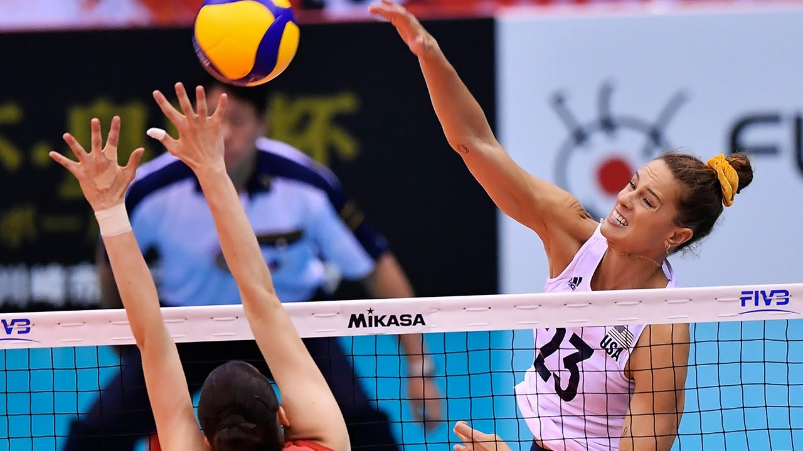
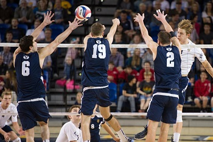
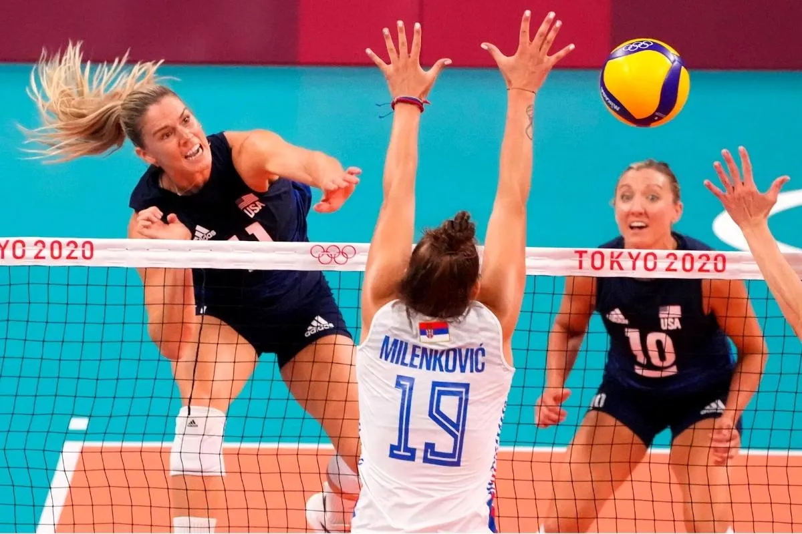

There are six positions that you can play on a volleyball team. First of all you need to know what numbers correlate with the positions on the court. The numbers will be displayed as if the team is serving in their starting rotation. Meaning that the setteris the first to serve. I will also be splitting this page in two, the front row and the back row.
Meet the Front row
Outside hitter
The second position is the outside hitter. The role of the front row outside hitter is to focus on hitting the ball from the setter. And block if the person on the other side of the net is hitting. The Outside hitter is the Sword of the team as the middle is the shield. To be an outside hitter you want to be good under pressure, be tall and/or be able to jump pretty high to get the highest you can over the net.
Middle Blocker
The Third position is reserved for the middle blocker. The middle blockers role in his/her team is very simple. As a middle blocker myself I know all the ins and outs of this position. The job of the middle is to be a wall for any hitters hitting over the net. The best way to block is to put your hands straight up and then push over the net with your palms facing the ball like the Picture below.
Meet the Back row
The one position is normally reserved for the setter. The setter is, in essence, the air traffic controller of the game. Meaning he/she controls how the team plays the game by giving out hand signals, then setting up the hitters with sets which will be explained on the Hand Signal page(link to this page perhaps?) And also is responsible for keeping the team on track to win. Requirements to be a good setter would be that you have to be a great leader, know the hand signals and different plays that you and your team have created, and last but not least, you need to be able to work hard to get your sets in good places so your hitter can hit them.
In the five spots is the second outside. The second outside is just like the first outside. But the difference is that while the second outside is in the back they are responsible for helping the libero for covering the back row and to pass anything that gets through the blocks. As a backrow outside you have to be somewhat good at passing and also good at hitting the ball. Its an outside but staring in the back.
In the number six position is the second most important job on the team, besides the setter, would be the libero. The word libero is Italian for ‘free defender’,or literally ‘free beater’(Oxford Dictionaries). Which is honestly a great abbreviation for this position. The libero is the one that normally gets all the serves directed at him/her. Their job is to dig the ball into the air and to the center of the court to have the setter set. Making this position one of the more important ones.